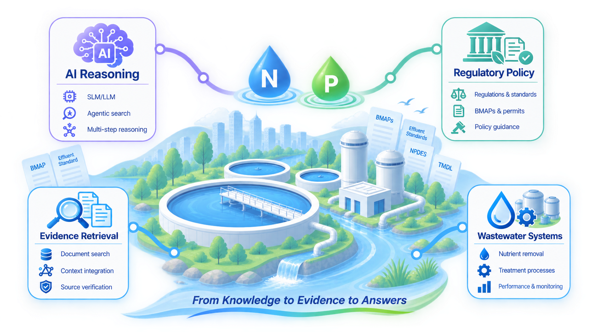

Natural-language regulatory questions
Ask complex wastewater nutrient-policy questions without needing to know the exact rule number, document title, or regulatory terminology
Agentic AI for environmental policy
WNP-ARAG connects regulatory knowledge, document retrieval, evidence assessment, and LLM reasoning to help users explore wastewater nutrient policies through natural-language questions

Platform capabilities
The platform connects AI-assisted reasoning with state regulatory databases, uploaded documents, and environmental-domain context rather than relying on unsupported model memory
Ask complex wastewater nutrient-policy questions without needing to know the exact rule number, document title, or regulatory terminology
The system searches state regulatory databases or a temporary uploaded-document vector database, reviews the evidence, and can refine its search when more information is needed
Responses are generated from retrieved passages and linked to supporting sources, page references, and the visible Search Journey for transparency and review
The platform is designed around nutrient management, wastewater planning, BMAPs, TMDLs, water-quality rules, and related compliance topics
How it works
Choose a state regulatory database or process an uploaded document, then enter a natural-language question
Semantic retrieval identifies relevant passages from the selected state database or uploaded-document vector database
The agent evaluates whether the accumulated context is sufficient and may refine the search
The final response is presented with supporting documents, page-aware references, and a transparent Search Journey
Scientific and policy use cases
WNP-ARAG supports rapid exploration of regulatory concepts, planning requirements, nutrient-reduction responsibilities, and evidence contained in state databases or user-provided documents
Transparency and responsible use
Supporting research and regulatory exploration while preserving source visibility, temporary-session safeguards, and user review
Choose a state database or upload a document, ask a question, inspect the supporting evidence, and follow the agent's search process
Launch Regulation Explorer